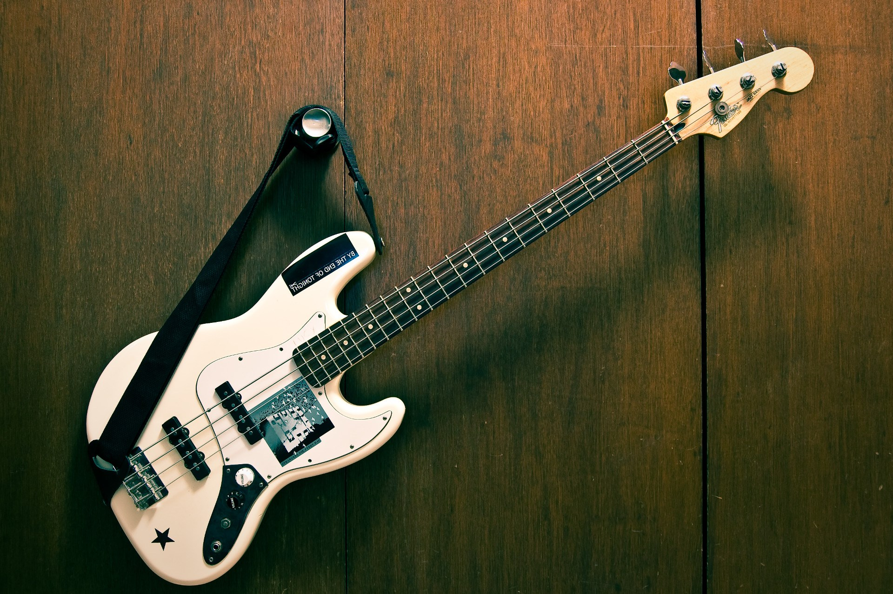
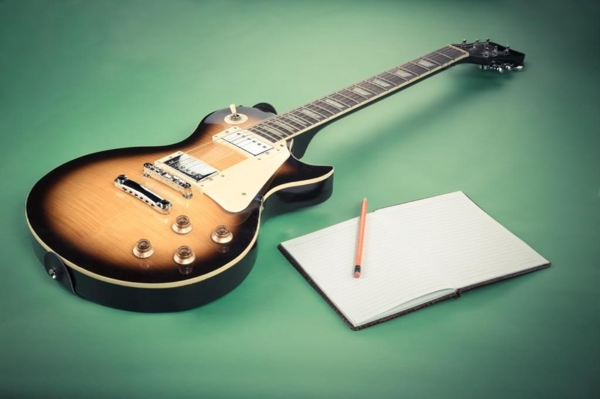
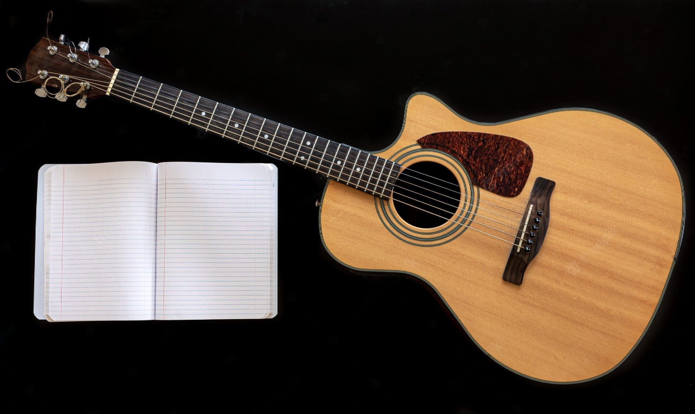

Types of guitars
Bass Guitar

The bass guitar, electric bass or simply bass, is the lowest-pitched member of the guitar family. It is a plucked string instrument similar in appearance and construction to an electric or an acoustic guitar, but with a longer neck and scale length, and typically four to six strings or courses. Since the mid-1950s, the bass guitar has largely replaced the double bass in popular music.
Electric Guitar

An electric guitar is a guitar that requires external amplification in order to be heard at typical performance volumes, unlike a standard acoustic guitar. It uses one or more pickups to convert the vibration of its strings into electrical signals, which ultimately are reproduced as sound by loudspeakers.
Classical Guitar

The classical guitar is a member of the guitar family used in classical music and other styles. An acoustic wooden string instrument with strings made of gut or nylon, it is a precursor of the modern acoustic and electric guitars, both of which use metal strings. Classical guitars derive from the Spanish vihuela and gittern of the fifteenth and sixteenth century. Those instruments evolved into the seventeenth and eighteenth-century baroque guitar—and by the mid-nineteenth century, early forms of the modern classical guitar.
Piotr Lutyński 1TA gr.2